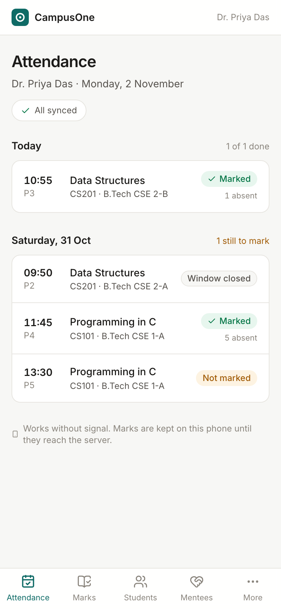
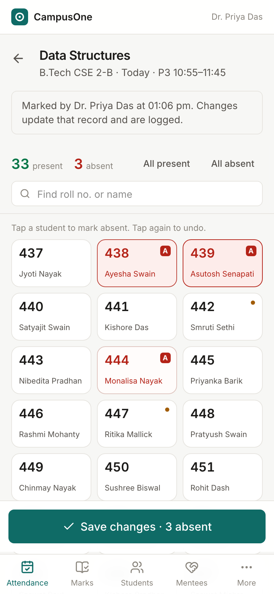
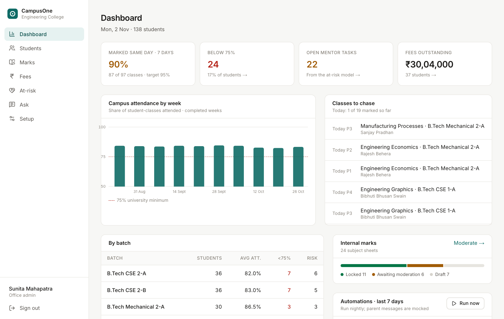
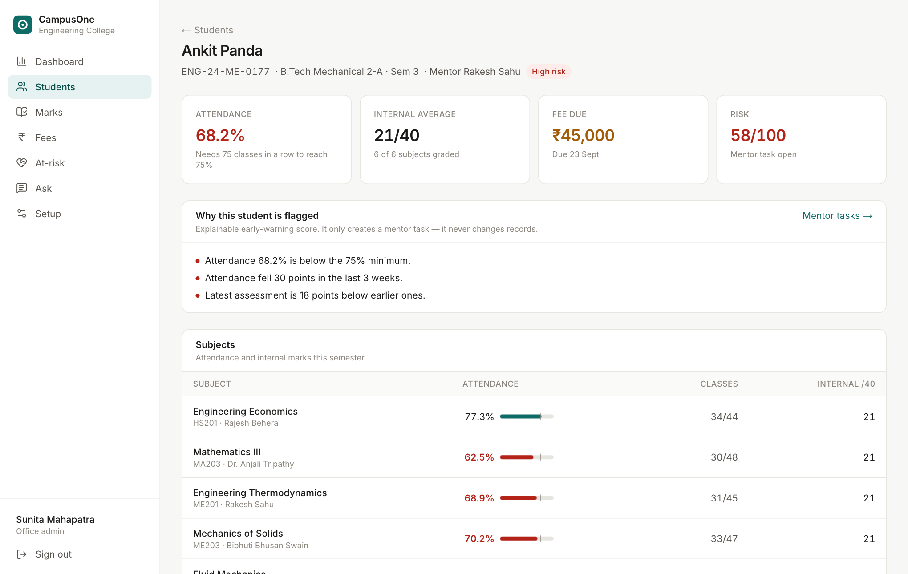
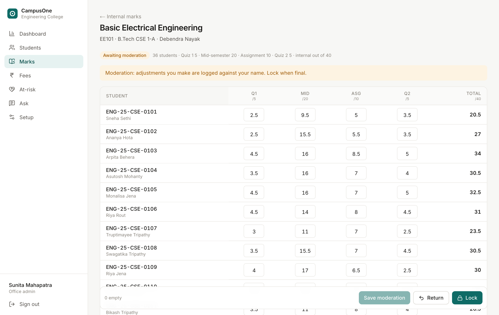
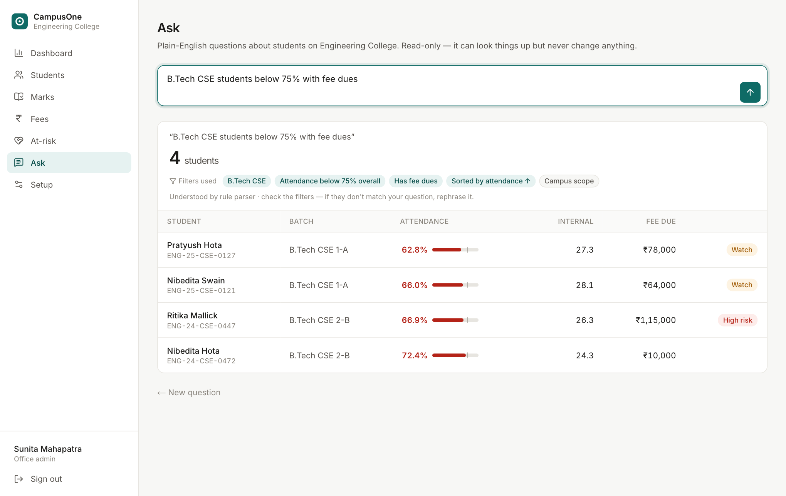

Technical Design Document · Phase 1 · Prepared for the Secretary, Company A Educational Trust, Bhubaneswar
One record per student: attendance, internal marks and fees for a multi-campus college ERP
This is the core build slice, working end to end for one campus (the Engineering College) with two roles, faculty and office admin. It runs on realistic seed data built around the three sample students in the brief.
| Brief requirement | What works |
|---|---|
| Masters for one programme | Campuses, departments, programmes, batches (intake + section), subjects with the 40-mark internal scheme, faculty, teaching assignments, weekly timetable and academic calendar. Subjects, faculty, teacher reassignment and calendar entries are editable; every change is audited. |
| Mobile attendance, offline in class | A class pack (rosters and timetable) is cached on the phone. Every student starts as present and the teacher taps only the absentees. Every tap is saved to the phone; submissions queue in an outbox and sync when signal returns. Retries are idempotent, conflicts are resolved by rule, and the server enforces a 48-hour edit window. |
| Alerts below 75% | After each sync and nightly, an automated shortage alert goes to the parent (a mocked SMS, in English or Odia). It is de-duplicated to one per student per week and held back when parental consent is missing. |
| Internal marks with moderation lock | A grid with inline validation and keyboard entry. The workflow is draft → submitted (moderation) → locked; unlocking needs a written reason. Every change is logged, and locked sheets export in the university upload format. |
| Fee dues | Fee structures by programme and category, scholarships, dues ledger, bank-counter receipts, test-mode payment links with an idempotent callback, printable receipts, dues CSV and Tally XML export. |
| AI: at-risk flag | An explainable score from attendance and marks levels and trends. It creates a mentor task only, refuses to judge when there is too little data, and treats a mentor's dismissal as feedback. |
| AI: plain-English questions (optional) | The question becomes a whitelisted JSON filter spec, which is validated, scoped to the user's campus and run read-only. The answer shows the filters, the row count and which engine answered. A rule parser takes over when the model is unavailable. |
| Dashboards | The campus dashboard shows the share of classes marked the same day (the brief's 95% target), shortage and risk counts, weekly attendance, a list of classes still to chase, marks-lock progress and automation activity. |
src/lib/* modules that take a database handle, so it is unit-testable and could later move behind a separate API without rewriting.SELECT … FOR UPDATE) and aggregate reporting for university, AICTE and NAAC. Any managed Postgres works.DATABASE_URL with node-postgres, through the same Drizzle schema and migrations.lib/sync.ts). That made the rules simple to explain to the client and to test. A CRDT or a replicated local database would be more machinery than "mark 60 students and send" needs.| Area | Tables | Notes |
|---|---|---|
| Masters | campuses, departments, programmes, batches, subjects, faculty, teaching_assignments, timetable_slots, calendar_events | A batch is programme + intake year + section. A teaching assignment (batch × subject → teacher) is the anchor for attendance and marks, so reassigning a teacher moves both. |
| People | users, students | Users carry a role and campus (plus faculty_id for teachers). Students hold parent_consent_at for the DPDP Act and the guardian's message language. |
| Attendance | attendance_sessions (UUID PK), attendance_records | The session ID is generated on the phone, which makes retries safe. Unique (batch, date, period) means a class can only be marked once. marked_at and synced_at are stored separately; present and absent counts are denormalised for fast lists. |
| Marks | assessment_components, marks, mark_sheets | Components per subject (Quiz 1 out of 5, Mid-sem 20, Assignment 10, Quiz 2 5). Each subject-and-batch sheet carries its workflow state. |
| Fees | fee_structures, scholarships, fee_invoices, payments, receipt_seq | The balance is computed (gross − concession − successful payments), never stored. A unique reference stops a replayed callback from crediting twice. Receipt numbers come from a Postgres sequence. |
| AI and audit | risk_flags, messages, audit_log, assistant_queries | A risk flag is the mentor task. Messages carry a unique dedupe key. The audit log stores before and after values plus a reason for marks, attendance corrections, payments and masters. Every assistant question and the spec it ran is logged. |
| Server sees | Result | Why |
|---|---|---|
| Same UUID, same marks | duplicate | The request timed out on weak Wi-Fi and the phone resent it. This is a harmless no-op. |
| Same UUID, different marks | updated | The teacher corrected the class. The before and after values go to the audit log. |
Other UUID, later markedAt | replaced | The later decision wins. The older copy is kept in the audit log. |
Other UUID, earlier markedAt | conflict | The phone shows both copies; the teacher chooses Keep server copy or Use mine (an override). |
| Wrong teacher, holiday, future date, not on the timetable, window closed | rejected | Shown on the phone with the reason. The office can still correct the record after the window. |
Edge cases handled: the 48-hour window is measured from when the class was marked, so a phone that only finds signal two days later still counts. A phone clock running ahead is clamped to server time with a warning. Students who join after the pack was downloaded are reported, not silently dropped. If the phone stays offline past midnight, it rebuilds the day's classes from the cached timetable. Sign-out wipes cached rosters (staff phones are shared), but first warns if unsynced classes would be lost. Target: under 30 seconds per class. One tap per absentee plus one submit. The phone shows the elapsed time ("Saved in 14 s · 2 absent").
Faculty edit only drafts and the office edits only during moderation. Nobody edits a locked sheet. Validation runs on the client (inline red cells) and again on the server (component maximums, half-mark steps, AB without a score, student must belong to the batch).
Each invoice is generated from the structure for the student's programme and category, less scholarships. Counter payments need a unique bank reference and cannot exceed the balance. A payment link creates a pending payment. The mock gateway callback locks the row, re-checks the balance (another payment may have cleared it) and issues a receipt exactly once; replays return the same receipt. Tally export writes Receipt vouchers as Tally Prime XML for a date range.
Inputs: overall attendance, its change over the last 3 weeks against earlier weeks, the internal-marks average, the latest assessment against earlier ones, and the number of subjects under 40%. Output: a score from 0 to 100 with a plain sentence for every point added. 50 or more is "high", 30–49 is "watch".
Why a transparent points model instead of a trained classifier: the trust has no historical labels yet (who actually failed or dropped out), so any "trained" model would be fitted to nothing. Mentors must be able to see why a student is flagged. The weights are an ASSUMPTION to recalibrate after one semester of outcomes, using the dismissal notes collected below. Seeded example: Ankit Panda scores 58 (high) because of attendance of 68.2%, a 30-point recent drop and a falling latest assessment. Subhashree Mohanty (81.5%, 33/40) is not flagged.
| Failure mode | Handling |
|---|---|
| Too little data | With fewer than 20 classes and no marks, the model does not judge and reports "Not enough data". With one signal it says "Based on attendance only". |
| False positive | The mentor clicks Not at risk with a note. It is not re-raised for 14 days unless the score rises by 15 or more. Dismissals are stored for recalibration. |
| The student recovers | An untouched open task closes automatically with a note on the next scan. |
| Harm | A flag only creates a mentor task. It never changes marks, attendance or exam eligibility. Attendance and marks rules are fixed settings in lib/config.ts, not AI. |
| When it is wrong or unsure | Handling |
|---|---|
| The model misreads the question | The filters are shown as chips next to the row count, so staff can check what actually ran. Every question and spec is logged. |
| The model is down, slow (10 s) or returns invalid JSON | The deterministic rule parser answers instead, and the answer says which engine was used. |
| Nothing maps to a filter | The assistant answers "I couldn't turn that into a report…" with examples. It does not guess. |
| Part of the question cannot be expressed | The model fills unsupported, which is shown as a warning above the result. |
| Write requests ("delete…", "send…") | Refused before the model is called. The executor cannot write anyway, because it only issues SELECTs. |
| Data the user may not see | Campus and role scope are applied in code; the spec cannot widen them. A test proves an Engineering admin asking for the MBA programme gets 0 rows. |
| A thin period such as "this month" on the 2nd | A warning says roughly how many classes fall in the period and suggests a wider one. |
The client asked for calm, minimal and consistent screens: "nothing on screen that lacks a purpose". The decisions:


Why tiles with the last three roll digits: teachers call roll numbers, not names. Three columns fit a 360 px phone without scrolling sideways, and the tap target is about 110×68 px, so it is easy to hit while standing.
Why "all present" by default: most classes have 0–5 absentees, so the work is proportional to absences rather than class size.
Why the sync chip is always visible: trust. The teacher should never wonder whether attendance "went through".




.env* files are ignored, npm run setup generates a local secret, and the cron endpoint uses a constant-time bearer check.Everything below goes beyond what the problem statement says. Each is a setting or seed value that can be changed.
lib/config.ts).RegdNo, SubjectCode, InternalMarks, MaxMarks, Status(P/AB). The real university template was not provided, and the exporter is one function to adapt.ENG-24-CSE-0412). To reproduce the sample percentages exactly with whole-number class counts, the seed has the sample students report 0–5 classes late in week 1.38 automated tests (npm test, about 7 s) run on a fresh in-memory Postgres seeded with demo data:
markedAt, office correction after the window, clock-skew clamp, foreign students ignored.The tests caught a real bug: the rule parser read "20,000" as 20. A final review against the brief caught two more, both now fixed and covered by tests: asking an Engineering admin's assistant about MBA students returned every Engineering student instead of none, and mock-gateway payments were not written to the audit log. The suite seeds data relative to today, so it was run with the clock set to each of the next 21 days (Sundays and holidays included) to make sure it passes whenever a reviewer runs it. Beyond the suite, a production build was checked in a headless browser on a 390 px phone: a reload with the network cut still loads the class list, a class marked offline syncs on reconnect, and faculty get 403 from admin APIs.
students table is ready for it.Honest limits: the session secret rotates only by redeploy; the rate limiter is per instance; on a teacher's own phone the cached roster stays until sign-out or the next download; receipt numbers come from a sequence, so a rolled-back payment can skip a number (the audit log explains it).